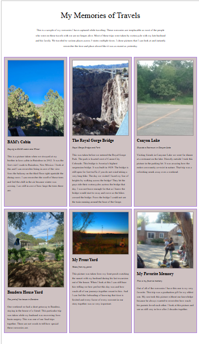
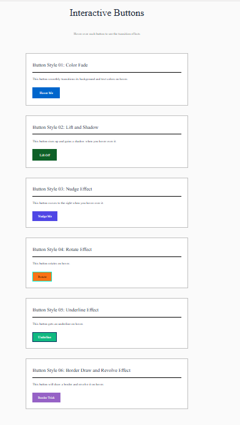

Learning Box Model in Web Development
Exploring the fundamentals of CSS box model and its application in modern web design.
Learn MoreI am learning to build websites and design applications while pursuing my passion for technology. I discovered my passion for technology and web development through my work in the IT field, and I am excited to continue growing my skills and contributing to innovative projects. From starting out awkwardly learning to code to now being able to create functional and visually appealing websites, I am proud of the progress I have made and the knowledge I have gained. I am eager to continue learning and expanding my skill set in this ever-evolving field.
Technologies and disciplines I am striving to develop and build upon.
HTML, CSS
Figma, Wireframing, Prototyping
Mobile-first frameworks, CSS Grid & Flexbox
A snapshot of my favorite and most recent projects. This is a selection of my recent work that showcases my skills and experience. It also allows me to delve into the memories I have with my late husband.

Exploring the fundamentals of CSS box model and its application in modern web design.
Learn More
What was a simple assignment for experienced developers may be the most challenging task for beginners. I was able to design multiple buttons that would each have an individual change when the cursor would hover over them. This project made me feel the joy of a child when I discovered how it worked and spent hours deciding what my favorite changed were.
Learn More